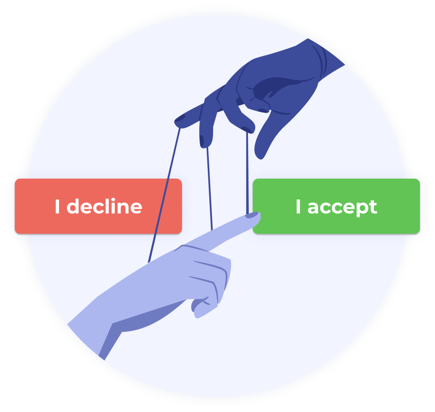

Impact
For users:- Overpaying for services and products
- Making bad decisions due to misleading information
- Feeling frustrated and anxious about the user experience
- Losing trust in companies or websites
- Short-term gains but long-term loss of credibility
- Loss of customer loyalty
- Potential legal consequences
- Negative public perception and damage to brand reputation

Dark patterns can have significant negative impacts on users that range from overpaying for services and products to making bad decisions because of misleading or psychologically manipulative tactics.
Dealing with dark patterns will also leave users with an experience of frustration, anxiety, and a sense of being deceived, which can lead to a decline in customer loyalty.
These patterns may lead to short-term gains for the company, but in the long run they can damage a user's trust in a company or website and often lead to a loss of credibility for the brand itself.
Companies also risk facing legal consequences or financial penalties for implementing dark patterns.